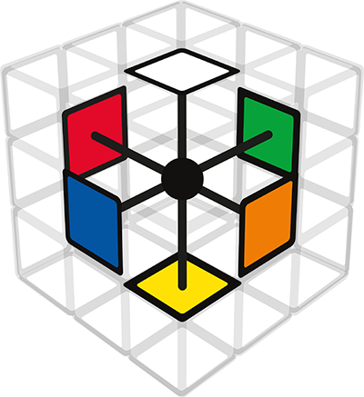
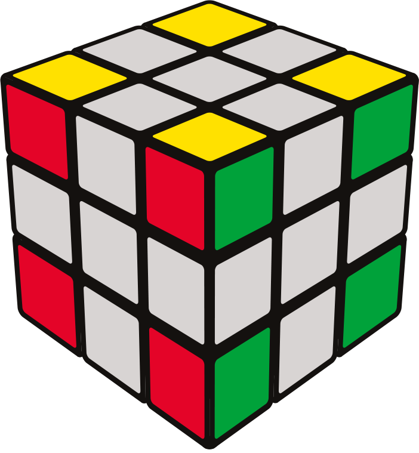
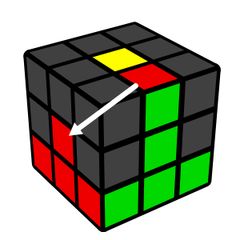
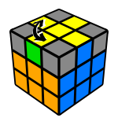

Die Einsteiger Methode ist sehr leicht anzuwenden (und zu lernen), denn zum lösen des Würfels benötigt man lediglich 6 kurze Algorithmen (Bewegungsabfolgen).
Die Lösung selbst erfolgt in 8 Schritten.
Kurze Infos vorab:
Die Mittelsteine sind fest angeordnet und geben die Farbe der Seite vor
Folgende Farben liegen sich immer gegenüber:
Gelb - Weiss
Blau - Grün
Rot - Orange
Es gibt 8 Ecksteine (mit 3 Farben)
und 12 Kanten (mit 2 Farben)


feste Anordnung
Mittelsteine
Ecken (3-farbig)
Kanten (2-farbig)
Notation:
Folgende Kurzformen solltet ihr kennen, mit der die Algorithmen beschrieben werden
V = Vordere Seite
R = Rechte Seite
L = Linke Seite
O = Obere Ebene
Falls eine 2 hinter einem Buchstaben steht, wird diese Bewegung doppelt ausgeführt
Falls ein einzelnes Hochkommata ( ' ) hinter einem Buchstaben steht, bedeutet dass diese Bewegung gegen den Uhrzeigersinn gedreht werden soll.
Zum Beispiel:
V = die vordere Seite im Uhrzeigersinn drehen
O' = die obere Ebene gegen den Uhrzeigersinn drehen
R2 = die rechte Seite wird doppelt gedreht (also um 180°)
Schritt 1: Gänseblümchen
Dieser Schritt kann intuitiv gelöst werden
Probiert einfach ein wenig aus.
1. Hinweis:
Sofern die falsche Seite vom Kantenstein nach oben zeigt, könnt ihr das ganz einfach ändern, indem man diesen zur Seite dreht. Danach macht Ihr in der oberen Ebene platz, damit ihr die Kante dann mit der weißen Seite nach oben drehen könnt.
Schritt 2: Weißes Kreuz
In diesem Schritt dreht Ihr die obere Ebene einfach bis die farbige Seite der Kante zum Mittelstein passt und dreht diese Kante dann um 180° nach unten.
Schritt 3: Die erste Ebene lösen (weiße Ecksteine)
In diesem Schritt lösen wir die weißen Ecksteine mittels des ersten Algorithmus.
Doch bevor wir diesen ausführen müssen wir zuerst die richtigen Bedingungen schaffen
findet zuerst einen weißen Eckstein in der oberen Ebene (seht in der Hilfe nach, wenn sich keiner dort befindet)
schaut welche 2 anderen Farben dieser weiße Eckstein hat
dreht die obere Ebene bis der Eckstein sich in der Nähe der 2 passenden Mittelsteine befindet (und somit oberhalb der Ecke in die der Stein eingefügt werden soll
haltet den Würfel so, dass der gewählte Eckstein sich rechts-oben auf der Vorderseite befindet
Schaut euch nun den Algorithmus zunächst einmal genau an und achtet darauf, dass die 2 Ecksteine (der Weiß-Rot-Grüne und die markierte Ecke) quasi die Plätze tauschen
Der "sexy-Move":
Der "sexy-Move" wurde so benannt weil man ihn schnell ausführen kann und wird häufig als Teil von fortgeschrittenen Algorithmen verwendet
Dieser Algorithmus besteht aus 4 Bewegungen
Rechte Seite mit dem Uhrzeigersinn drehen
Obere Seite mit dem Uhrzeigersinn drehen
Rechte Seite gegen dem Uhrzeigersinn drehen
Obere Seite gegen dem Uhrzeigersinn drehen
Kurzform: R O - R' O'
Mit der linken Hand haltet ihr den Würfel folgendermaßen:
Der Daumen liegt auf der Vorderseite zwischen der ersten und zweiten Ebene
Mittel- und Ringfinger halten auf der Rückseite die erste und zweite Ebene fest
So können sich nur die obere und rechte Seite bewegt werden
Mit der rechten Hand greift ihr vor dem Ausführen um
Der Daumen liegt auf der unteren Seite
Zeige-, Mittel- und Ringfinger liegen auf der oberen Seite
Ungefähr so als würdet ihr einen Burger in der Hand halten.
Die ersten 3 Bewegungen macht ihr mit Rechts
(rechte Hand) Dreht die 3 oberen Finger von euch weg, so dass der Daumen wieder vorne ist
(rechter Zeigefinger) Zieht den Zeigefinger zu euch hin.
(rechte Hand) Rechte Seite zurück drehen (der Daumen ist dann wieder unten)
(linker Zeigefinger)Zieht den Zeigefinger zu Euch hin.
Manchmal reicht es leider nicht den "sexy-Move" nur einmal auszuführen. Wiederholt dann einfach den ganzen Algorithmus solange, bis die weiße Seite nach unten zeigt.
Im schlimmsten Fall müsst Ihr den Algorithmus bis zu 5 mal für eine Ecke ausführen.
1. Hinweis:
Falls sich kein weißer Eckstein in der oberen Ebene befindet, führt Ihr den Algorithmus einfach einmal dort aus, wo ihr den Eckstein entfernen wollt. Danach könnt ihr ihn über die richtige Position drehen.
2. Hinweis:
Eventuell vergisst man mal wo man sich im Algorithmus befindet. Es braucht ein wenig Übung bis das ganze wie von selbst in euer Muskelgedächtnis übergeht. Im Notfall stellt ihr einfach als erstes sicher, dass Ihr das weiße Kreuz wieder herstellt. Und stellt dann die Startbedingungen für den Algorithmus wieder her (also die richtige weiße Ecke über die Position drehen in der sie eingefügt werden soll.
Schritt 4: Die zweite Ebene lösen (mittlere Kantensteine)
In diesem Schritt platzieren wir die richtigen Kantensteine.
Dazu benötigt man 2 Algorithmen, die sich allerdings spiegeln.
Sorgen wir aber zuerst für die richtigen Startbedingungen
Findet in der oberen Ebene einen der 2-farbigen Kantensteine (der nicht gelb ist). Zum Beispiel: Grün-Rot
Falls ihr dort keinen finden könnt, schaut in der Hilfestellung nach
Dreht diesen Stein nun bis die Außenseite zum Mittelstein passt (und ein umgedrehtes T entsteht).
Jetzt müssen wir schauen ob wir den Stein Links oder Rechts einfügen müssen

(O' L' O L) (O V O' V')
(O R O' R') (O' V' O V)
Das Prinzip ist bei beiden Algorithmen das gleiche.
Um es uns leichter zu machen die Abfolge zu merken, teilen wir das ganze in Zwei Parts auf
1. Block bilden (die zwei Steine richtig zusammenführen)
Zuerst drehen wir die Kante weg (von der Position in die sie eingefügt werden soll)
Wir holen die passende weiße Ecke nach oben
Jetzt holen wir die Kante zurück zum Mittelstein
Nun drehen wir die Linke Seite zurück, so dass die beiden Steine einen kleinen Block bilden
2. Block einfügen
Wir drehen den Block über die Ecke hinaus (so dass man die Vorderseite drehen kann ohne diesen Block wieder zu trennen)
Dann dreht man die Vorderseite so, dass die zwei Steine die man jetzt ersetzen möchte in der oberen Ebene sind
Danach ersetzt man die zwei Steine die gerade noch oben geholt wurden, durch den Block
Zum Schluss dreht man die Vorderseite zurück, damit die weiße Seite wieder vollständig ist
1. Hinweis:
Es kann vorkommen, dass eine Kante verkehrt herum in der Position ist.
In diesem Fall müsst ihr den Algorithmus zwei mal ausführen.
Einmal um einen beliebigen gelben Kantenstein, in dieser Position einzufügen.
Dann richtet ihr die Kante, die soeben in die obere Ebene geholt wurde, neu aus und fügt sie mit dem richtigen Algorithmus wieder ein.
Schritt 5: Das gelbe Kreuz
Dieser Schritt ist etwas einfacher als der vorherige, denn wir brauchen nur einen kurzen Algorithmus, von dem ihr den größten Teil schon kennt. In Kurzform sieht er so aus:
V (R O R' O') V'
bzw.
V (Sexy Move) V'
Momentan sollte einer von 4 Fällen vorliegen (die Ecken sind noch nicht relevant):
Die Vorbereitung für den Algorithmus beschränken sich dieses mal nur auf die 2 mittleren Fälle. Sofern Ihr einen von diesen beiden habt, richtet die obere Ebene so aus wie sie in der Grafik zu sehen sind.
Ansonsten wiederholt ihr den Algorithmus einfach solange bis ihr das gelbe Kreuz habt
Vordere Seite mit dem Uhrzeigersinn drehen
Sexy-Move
Vordere Seite gegen dem Uhrzeigersinn drehen
(optional): neu ausrichten falls ihr das L oder den Balken habt
Rechte Seite mit dem Uhrzeigersinn drehen
Obere Seite mit dem Uhrzeigersinn drehen
Rechte Seite gegen dem Uhrzeigersinn drehen
Obere Seite gegen dem Uhrzeigersinn drehen
Hier seht ihr den Ablauf der ganzen Phase:
Guckt es Euch am besten Schritt für Schritt über das + Zeichen an.
Schritt 6: Die gelben Kanten ausrichten
Wir haben nun das gelbe Kreuz auf der oberen Fläche, doch die seitlichen Farben der Kannten stimmen noch nicht mit denen der Seiten überein. Wir müssen diese nun an die richtige Position bringen.
Um sie an die richtige Stelle zu bringen benutzen wir einen Algorithmus, der die Vordere-Obere und die Linke-Obere Kante miteinander tauscht.
R
O
R'
O
R
O2
R'
O

1. Hinweis:
Rechts wird immer abwechselnd Hoch oder Runter gedreht
2. Hinweis:
Oben wird immer im Uhrzeigersinn gedreht
3. Hinweis:
Beobachtet einmal den markierten Block, der sich wie in einem Karussell in der oberen Ebene bewegt.
Dadurch sollte auch klar werden, warum und wann man einmal eine Doppelbewegung machen muss (sonst würden wir mit der nächsten Rechts-Drehung den Block auftrennen)
Schritt 7: Die gelben Ecken positionieren
Wir haben es fast geschafft. Nur noch die gelben Ecken sind übrig, um den Würfel zu lösen. Auch die Ecken lösen wir in zwei Schritten. Zuerst werden wir die Ecken an die richtige Stelle bringen, um sie dann im nächsten Schritt zu orientieren.
Dafür brauchen wir einen letzten neuen Algorithmus.
(O
R)
(O'
L')
(O
R')
(O'
L)
Zur Vorbereitung:
Schaut nach ob Ihr eine Ecke finden könnt, die sich an der richtigen Position befindet (Wo die 3 Farben zu den angrenzenden Mittelsteinen passen. Ob die gelbe Seite schon nach oben zeigt, ist dabei egal)
Dreht bei der Suche nur den ganzen Würfel (nicht die obere Ebene) - die gelben Kanten(2-farbig) müssen weiterhin gelöst bleiben
Halten den Würfel dann so, dass die richtige gelbe Ecke sich Vorne-Rechts-Oben befindet (bei dem Beispiel ist Grün die Vordere Seite)
Wenn alle 4 Ecken an der falschen Position sind, dann führt Ihr den Algorithmus einfach einmal aus. Danach ist eine Ecke auf jeden Fall richtig.
Es kann vorkommen, dass man den Algorithmus 2 Mal wiederholen muss (3 Mal wenn alle Ecken falsch waren)
1. Hinweis:
Bei diesem Algorithmus ist es sehr hilfreich zu betrachten welche Hand aktiv ist.
Die Abfolge ist dann wie folgt:
(Rechte Hand) - 2 Bewegungen
(Linke Hand) - 2 Bewegungen
(Rechte Hand) - 2 Bewegungen
(Linke Hand) - 2 Bewegungen
2. Hinweis:
Die zwei Bewegungen haben auch immer Gemeinsamkeiten:
Zuerst: Zieht man mit dem jeweiligen Zeigefinger die obere Schicht zu sich heran
Danach: folgt eine Drehung
3. Hinweis:
Die Drehungen folgen auch einem Muster:
(Rechte Hand) - Hoch drehen
(Linke Hand) - Hoch drehen
(Rechte Hand) - Runter drehen
(Linke Hand) - Runter drehen
4. Hinweis:
Zusammenfassung
(Rechte Hand) - Zeigefinger ziehen
(Rechte Hand) - Hoch drehen
(Linke Hand) - Zeigefinger ziehen
(Linke Hand) - Hoch drehen
(Rechte Hand) - Zeigefinger ziehen
(Rechte Hand) - Runter drehen
(Linke Hand) - Zeigefinger ziehen
(Linke Hand) - Runter drehen
Schritt 8: Die gelben Ecken ausrichten / Den Würfel lösen
Im letzten Schritt ist jeder Stein an der Position an der er sein soll, doch die gelben Ecken sind noch falsch orientiert. Um den Würfel zu lösen müssen wir wieder den gleichen Algorithmus benutzen, den wir bereits verwendet haben um die Ecken der ersten Ebene zu lösen: den Sexy-Move
R O - R' O'
Wir haben jetzt entweder 2, 3 oder 4 Ecken die noch richtig orientiert werden müssen. (habt ihr nur eine falsche Ecke, dann ist diese verdreht und der Würfel unlösbar)
Vorbereitungen:
Drehe den Würfel zuerst mit der gelben Seite nach unten
Halte den Würfel so, dass eine ungelöste gelbe Ecke sich Vorne-Rechts-Unten befindet
Der Ablauf erfolgt so:
Ihr wiederholt den "Sexy-Move" bis die gelbe Ecke richtig nach unten zeigt
bleibt ruhig, wenn der Würfel jetzt wieder etwas chaotisch aussieht, das ist normal
dreht jetzt nur die untere Ebene bis die nächste ungelöste gelbe Ecke sich Vorne-Rechts-Unten befindet
Diesen Ablauf wiederholt Ihr bis alle gelben Ecken gelöst sind
1. Hinweis:
Achtet darauf den Sexy-Move immer komplett auszuführen (alle 4 Bewegungen)
2. Hinweis:
Eine gelbe Ecke ist nach jeweils 2 oder 4 Ausführungen des Sexy-Moves richtig orientiert.
Also schaut am besten alle 2 Sexy-Moves kurz unter den Würfel ob die gelbe Ecke richtig orientiert ist.
WICHTIG: Löst dabei am besten nicht den Griff der linken Hand, bevor ihr durcheinander kommt, welche Ecke Vorne-Unten-Rechts war
3. Hinweis:
Dieser letzte Schritt kann leider sehr frustrierend sein, weil man sich den Würfel wieder vollständig verdrehen kann. Aber gebt nicht auf, falls Ihr nochmal von Vorne beginnen müsst, seht es einfach als Übung für die ersten Schritte an.
Hoffentlich haltet Ihr nun einen gelösten Rubik's Cube in der Hand.


 Der "sexy-Move" wurde so benannt weil man ihn schnell ausführen kann und wird häufig als Teil von fortgeschrittenen Algorithmen verwendet
Der "sexy-Move" wurde so benannt weil man ihn schnell ausführen kann und wird häufig als Teil von fortgeschrittenen Algorithmen verwendet
 Kurzform:
Kurzform:  Manchmal reicht es leider nicht den "sexy-Move" nur einmal auszuführen. Wiederholt dann einfach den ganzen Algorithmus solange, bis die weiße Seite nach unten zeigt.
Manchmal reicht es leider nicht den "sexy-Move" nur einmal auszuführen. Wiederholt dann einfach den ganzen Algorithmus solange, bis die weiße Seite nach unten zeigt.